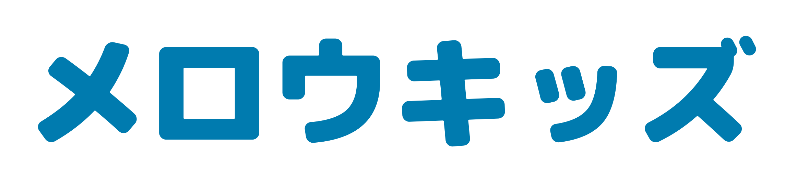
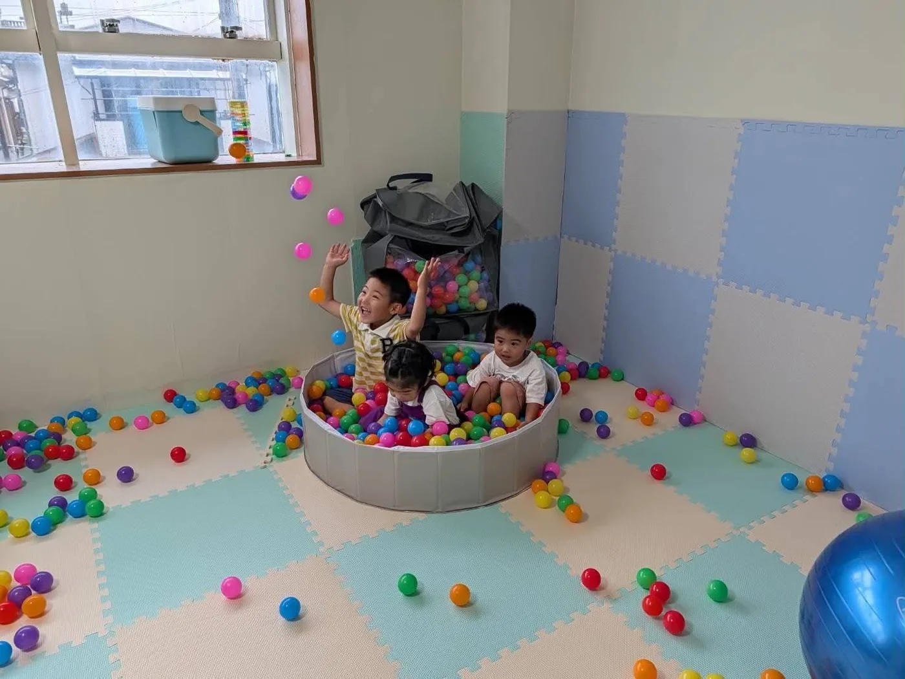
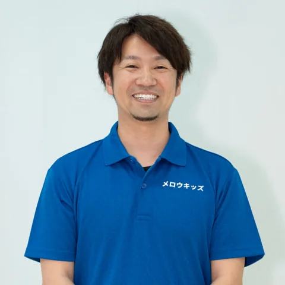
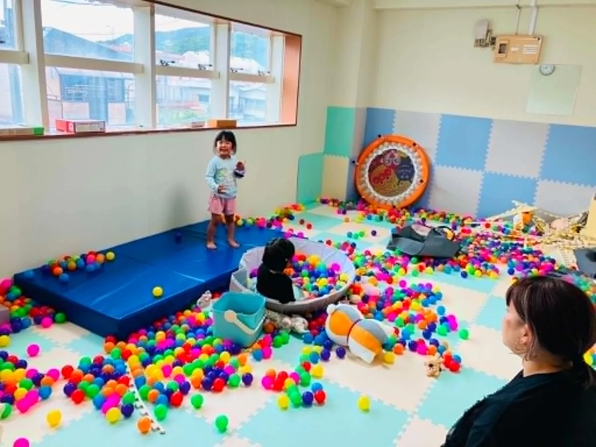
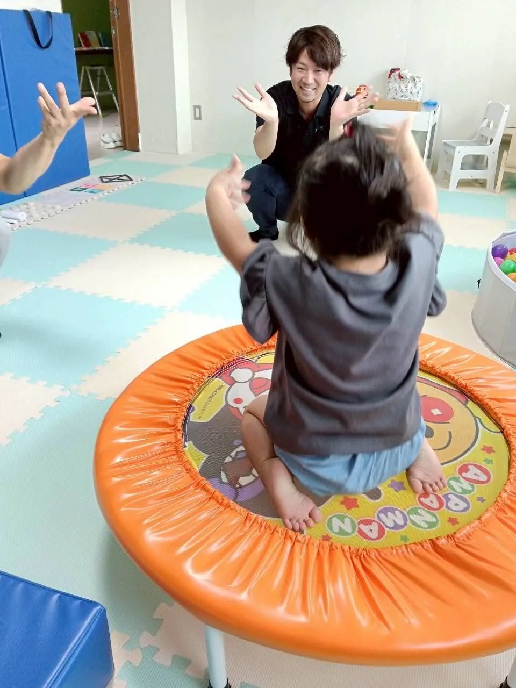

2026.5.11 OPEN 利用児募集中（1〜6歳）

MELLOWKIDS
奄美の児童発達支援事業所
子育てを、
子育てを、
もっと豊かに。
奄美市永田町の児童発達支援事業所です。作業療法士・公認心理師・保育士が在籍し、1名〜3名までの個別・小集団支援を行っています。
作業療法士・公認心理師・保育士 在籍
1名〜3名までの個別・小集団支援
利用児募集中：1〜6歳


専門職のスタッフがそばにいます
作業療法士・公認心理師・保育士が在籍


About us
違いを認め、
わたしたちの想いを読む →
違いを認め、
個性を活かして、丸く。
メロウキッズが目指すのは「円融無碍（えんゆうむげ）」。違いを否定せず、それぞれが個性を活かしながら社会と調和している状態です。個別・少人数でじっくり向き合い、お子さんの育ちに取り組みます。
医療領域でからだと心に向き合ってきた リハビリテーションの専門職 が複数在籍。培ってきた知識とスキルを、子ども・ご家庭に還元します。
Program
3つの円で、育ちを支える
1名〜少人数の個別・小集団支援を大切に、専門職ならではの視点で「からだ・こころ・生活」の育ちを支えます。
身体づくり
感覚遊びや運動遊び、感覚統合を通じて、からだの土台をつくります。
心と
コミュニケーション
心理師や精神科経験のある作業療法士が、心理面とコミュニケーションを支えます。
生活の困りごとの解決
トイレや着替えなどの生活動作を、環境面も含めてサポートします。
Program
1時間の短時間集中プログラム
① 9:00 – 10:00
② 10:30 – 11:30
③ 13:30 – 14:30
④ 15:00 – 16:00
Flow
ご利用までの流れ
1
お問い合わせ・見学
電話・メール・フォームから。施設見学・体験を実施します。
2
利用申請
市町村窓口で受給者証を申請。相談支援事業所を選定します。
3
計画・相談
相談支援専門員さんと利用計画を立てます。
4
ご利用開始
受給者証発行・契約のうえ、通所スタート。
お問い合わせからご利用開始までは2か月ほどかかります。お早めのお問い合わせがおすすめです。
流れを見る →
Access
アクセス詳細 →
アクセス
| 所在地 | 〒894-0023 鹿児島県奄美市名瀬永田町14-1 |
|---|---|
| TEL / FAX | 0997-58-5511 ／ 0997-58-5544 |
| 営業時間 | 月〜金（祝日含む）8:30–17:00 |
| 駐車場 | あり（2台） |